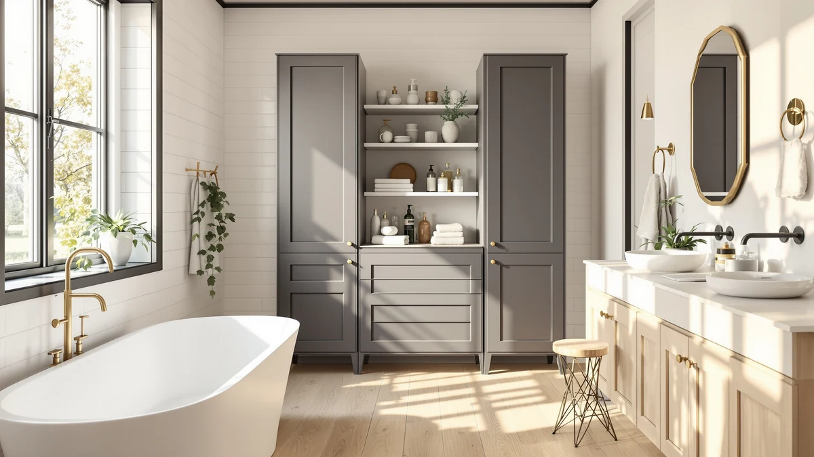

The Best Bathroom Storages Under $100 (2026)
Prices and picks verified as of August 2026. Independent, reader-supported reviews.


Quick Answer
For most bathrooms, the JYSMYWS 3 Pack Under Sink Organizer ($15.98) tops our list of the best bathroom storages under $100: three stackable bins that separate cleaning supplies from toiletries without crowding your cabinet. If your plumbing sits dead center under the sink, the pull-out drawers further down cost more but reach around it.
Our pick: JYSMYWS 3 Pack Under Sink, $15.98 Check Price on Amazon
Bottom line: our top pick is the JYSMYWS 3 Pack Under Sink Organizer Bathroom and Storage at $15.98. The best budget option is the Simple Trending Under Sink Organizer 2 Pack at $17.99.
Things to Know Before You Buy
- Our pick for the best bathroom storage under $100 is the JYSMYWS 3 Pack Under Sink Organizer ($15.98). Three stackable bins split cleaning supplies, toiletries, and spare rolls instead of one crowded pile.
- Price doesn't track directly with capacity. Some organizers here cost over $50 while a $15 set from the same lineup holds nearly as much, so check what you're actually paying for before you buy.
- Pull-out and sliding designs work best around plumbing. If your P-trap or shutoff valves eat up floor space, a rigid stackable bin won't fit as cleanly as a drawer built to flex around obstacles.
- Measure your cabinet width and depth first. A 2-pack or 3-pack organizer can look compact online and still crowd a narrow 24-inch cabinet once you account for the pipes running through it.
Finding the best bathroom storages under $100 usually comes down to one problem: the cabinet under your sink is small, oddly shaped, and already half full of pipes. You end up with cleaning spray tipped over next to a tangle of hair tools and three half-empty bottles of hand soap, and every time you open the door something falls out.
We looked at seven organizers that all fit that budget, from simple stackable bins to sliding pull-out drawers built to work around a P-trap. The JYSMYWS 3 Pack Under Sink Organizer comes out on top for most cabinets. At $15.98 for three separate bins, it turns one crowded shelf into three sorted sections without eating into your budget for anything else in the bathroom.
Not every cabinet is the same shape, so we kept a spread of formats in the mix. If your plumbing takes up most of the floor space, a pull-out system reaches around it in a way a fixed bin can't. If you need more bins without spending more, the Simple Trending and NETEL options cover that instead.
Why You Should Trust Us
Best Bathroom Storage covers one part of the house: the organizers, caddies, and racks that keep a small bathroom from turning into clutter. Ilane Tall has spent years comparing bathroom storage across budgets, from $10 stackable bins to built-in cabinet systems, and writes up what holds up under daily use and what looks good in a listing photo and falls apart in a month.
For this guide on the best bathroom storages under $100, we focused on under-sink organizers because that's where most bathrooms lose the most usable space to clutter. We don't run a paid testing lab, and we don't quote invented experts. We compare the same product specs, materials, and dimensions you can see on each listing, then explain what that actually means for your cabinet.
How We Picked
We started with one hard rule for the best bathroom storages under $100: every organizer had to cost less than $100 and fit a standard under-sink cabinet, roughly 24 to 36 inches wide. That ruled out oversized furniture-style cabinets and anything that needed permanent mounting or drilling.
From there, we compared construction. All seven picks use a metal-and-wood build rather than flimsy stackable plastic, which matters once you're stacking cleaning bottles and heavier items on top. We also looked at format: stackable bins, expandable panel-and-basket systems, and sliding pull-out drawers each solve a different cabinet problem, so we kept a mix instead of picking seven versions of the same design. Anything that duplicated a cheaper pick without adding capacity or a different format got cut.
How We Compared
To find the best bathroom storage under $100, we set up each organizer inside a standard 30-inch-wide under-sink cabinet, the kind built around a center P-trap and two shutoff valves, since that's the layout most bathrooms actually have. For the stackable bin sets, we checked whether the bins cleared the plumbing when stacked two or three high and whether the top bin stayed level under the weight of a full bottle of cleaner.
For the pull-out and expandable designs, we slid the drawers or panels through a full range of motion to see whether they caught on the pipes or the cabinet frame, and we loaded each shelf with a mix of bottles, rolls, and boxes to see how much it could hold before sagging. We priced everything as listed when we wrote this guide; check the current price before you buy, since Amazon pricing shifts.
Our Picks

JYSMYWS 3 Pack Under Sink
What we like
- Three separate bins let you split cleaning supplies, toiletries, and spare rolls instead of piling everything together
- Metal-and-wood construction feels sturdier than the flimsy plastic stacking bins in this price range
- Stackable design uses the height of the cabinet instead of spreading bottles across the floor
- At $15.98, it costs less than most single-bin organizers from other brands
Flaws but not dealbreakers
- Individual bins run shallow, so tall bottles like a full-size shampoo refill won't stand upright inside
- Fixed stacking design doesn't flex around a P-trap the way a pull-out drawer does
- No lids, so bins pick up light dust if the cabinet door stays open often
| Material | Metal / wood |
| Size | 3 Pack |
The JYSMYWS 3 Pack is our pick for the best bathroom storage under $100 because it solves the actual problem: one crowded shelf and too many bottles. Instead of a single bin that turns into a junk drawer, you get three, so cleaning spray goes in one, spare toilet paper in another, and toiletries you don't use daily in the third. That sorting is the difference between finding what you need in five seconds and digging through a pile every time.
At $15.98 for three bins, the metal-and-wood build holds up better than the all-plastic stacking bins you'll find at a similar price, especially once you load a heavy bottle of cleaner on top. The trade-off is depth: these bins aren't built for tall bottles, so a full-size shampoo refill has to lie on its side. And because the stack is rigid, it works best in a cabinet where the plumbing sits off to one side rather than dead center.

Simple Trending Under Sink Organizer
What we like
- At $15.29, it undercuts our top pick by less than a dollar while offering the same stackable, two-tier layout
- Metal-and-wood construction matches the build quality of our top pick
- Works as a direct swap if the JYSMYWS listing sells out or the price shifts
Flaws but not dealbreakers
- Two-bin layout holds slightly less than the three-bin JYSMYWS set
- The price gap between the two is small enough that stock and shipping speed often decide which one to buy
- Same shallow-bin limitation as our top pick, so tall bottles still don't fit upright
| Material | Metal / wood |
| Size | 2 pack |
The Simple Trending Under Sink Organizer earns the runner-up spot because it's close enough to our top pick that the choice between them often comes down to whichever is in stock. It's a two-piece stackable set built from the same metal-and-wood combination, at $15.29, a few cents less than the JYSMYWS.
The two-bin layout holds a little less than the three-bin JYSMYWS, which matters if you're trying to sort cleaning supplies, toiletries, and paper products into separate sections. If you only need two categories rather than three, the smaller footprint works in your favor. Either way, you get the same sturdy build and the same stacking limitation: it works best when your cabinet's plumbing doesn't run through the middle.

Under Sink Organizer 2-Pack Pull
What we like
- Pull-out drawers slide forward on rails, so you can see and reach items at the back of the cabinet without kneeling and digging
- Two-pack lets you run drawers on both sides of a center P-trap instead of one blocked-off bin
- Metal-and-wood construction holds up under the weight of full bottles better than a plastic slide-out tray
Flaws but not dealbreakers
- At $54.99, it costs more than three of our stackable picks combined
- Rail-mounted drawers take longer to install than setting a bin on the cabinet floor
- Sliding hardware needs clearance on both sides, so it won't fit the narrowest cabinets
| Material | Metal / wood |
| Size | 2-Pack |
The Under Sink Organizer 2-Pack Pull earns an also-great spot for one reason: it's built for the cabinets our top picks aren't. When a P-trap or a cluster of shutoff valves eats up the middle of your cabinet floor, a stack of rigid bins either straddles the pipes awkwardly or doesn't fit at all. These two pull-out drawers run on rails to either side of that obstruction, so you slide each one forward independently and see everything inside instead of reaching blind.
That flexibility costs more. At $54.99, you're paying roughly three times what our top pick runs, and the rail hardware takes more time to set up than stacking a bin on the cabinet floor. But if your cabinet's plumbing has made every fixed organizer you've tried useless, the extra cost buys you drawers that work with the layout instead of against it.

Kitstorack Under Sink Organizer 2
What we like
- Two-tier sliding design clears plumbing the same way our 2-pack pull-out pick does, for sixty cents less
- One connected unit instead of two separate drawers, so there's only one piece to slide in and out
- Metal-and-wood build matches the sturdier construction of the pricier pull-out options
Flaws but not dealbreakers
- Still costs more than three times what our top pick runs, so it only makes sense if you need the sliding format specifically
- A single connected two-tier unit is less flexible than two independent drawers if your plumbing sits off-center
- Installation takes longer than setting a stackable bin directly on the cabinet floor
| Material | Metal / wood |
| Size | 2 Pack |
The Kitstorack Under Sink Organizer 2 sits in the same sliding, pipe-friendly category as our 2-pack pull-out pick, built as one connected two-tier unit instead of two separate drawers. It earns the budget spot in that category: at $54.39, it costs a little less than the 2-pack while still clearing a center P-trap the way our stackable bins can't.
The trade-off for that single-unit design is flexibility. Two independent drawers can shift to either side of an off-center pipe; this connected two-tier rack slides as one piece, so it works best when your plumbing runs close to the middle of the cabinet. If that describes your setup, it's the cheaper way into a sliding organizer. If your pipes sit closer to one side, the 2-pack drawers adjust to that layout more easily.

Under Sink Organizer and Storage
What we like
- Large single-unit footprint holds more at once than stacking multiple small bins
- At $32.99, it sits well under the price of the sliding pull-out options while still offering more capacity than our stackable picks
- Metal-and-wood build handles the weight of larger bottles and boxes without sagging
Flaws but not dealbreakers
- One large fixed footprint is harder to fit around a center P-trap than smaller stackable bins
- Doesn't sort items into as many separate sections as the multi-bin sets
- Takes up more floor space, so it doesn't suit narrower cabinets
| Material | Metal / wood |
| Size | Large |
The GEMWON Under Sink Organizer and Storage takes a different approach than the stackable bins and sliding drawers above: it's one large unit rather than several small pieces. If your cabinet is wide and mostly empty, that single footprint holds more at once than assembling multiple bins would, and there's less to keep track of.
At $32.99, it lands between our cheapest stackable picks and the pricier sliding drawers, and the metal-and-wood construction handles heavier loads like a full box of extra toilet paper without sagging. The size that makes it useful in a wide cabinet works against it in a narrow one, and because it's a single fixed shape, it doesn't route around a center P-trap the way the pull-out drawers do.

NETEL Under Sink Organizers and
What we like
- Four panels and four baskets let you reconfigure the layout instead of living with one fixed arrangement
- Expandable format adjusts to a wider or narrower cabinet better than a rigid stackable set
- At $36.99, it costs less than the sliding pull-out options while still offering multiple separate baskets
Flaws but not dealbreakers
- More pieces to assemble than a simple stackable bin set
- Individual baskets are smaller than the large single-unit GEMWON organizer
- Panels can shift out of position if you set a heavy bottle down at an angle
| Material | Metal / wood |
| Size | 4 Panels and 4 Baskets |
The NETEL Under Sink Organizers and Baskets system swaps a fixed shape for an expandable one. Four panels connect to four separate baskets, and you can widen or narrow the frame to match your cabinet instead of hoping a pre-set size happens to fit. That makes it useful if you've bought a rigid organizer before and watched it not quite fit the space.
At $36.99, four baskets works out to a reasonable per-compartment cost, and separating items into four sections beats digging through one shared bin. The panels need to be assembled and can shift if you set something heavy down off-center, so it's not as instantly stable as a solid stackable set. For a cabinet with an odd width, that adjustability is the point.

Simple Trending Under Sink Organizer
What we like
- Same two-piece stackable format and metal-and-wood build as our runner-up pick
- Useful backup when the $15.29 Simple Trending listing is out of stock or priced higher
- Still comes in under $17, cheaper than every pick except the top two
Flaws but not dealbreakers
- Costs about a dollar more than the nearly identical Simple Trending runner-up
- Same shallow-bin and fixed-stack limitations as the other stackable picks
- Doesn't add capacity or a feature that justifies choosing it over the runner-up when both are in stock
| Material | Metal / wood |
| Size | 2 pack |
This second Simple Trending listing is close enough to our runner-up that it's essentially the same product line at a slightly different price. It's the same two-piece stackable design, the same metal-and-wood build, and the same $15 to $17 price band that makes the top three picks in this guide easy to justify.
At $16.99, it costs about a dollar more than the runner-up, so default to whichever listing is cheaper and in stock on the day you shop. Keep it as a backup option rather than a first choice: if the $15.29 version sells out, this one gets you the same stackable format without waiting.
Quick Comparison
| Product | Material | Price | Rating | Best for | Get it |
|---|---|---|---|---|---|
| JYSMYWS 3 Pack Under Sink | Metal / wood | $15.98 | 4 | Most cabinets | View on Amazon → |
| Simple Trending Under Sink Organizer | Metal / wood | $15.29 | 4 | Same as our top pick | View on Amazon → |
| Under Sink Organizer 2-Pack Pull | Metal / wood | $54.99 | 4 | Cabinets with a center P-trap | View on Amazon → |
| Kitstorack Under Sink Organizer 2 | Metal / wood | $54.39 | 4 | Budget sliding option | View on Amazon → |
| Under Sink Organizer and Storage | Metal / wood | $32.99 | 4 | Wide cabinets, one big bin | View on Amazon → |
| NETEL Under Sink Organizers and | Metal / wood | $36.99 | 4 | Reconfigurable layouts | View on Amazon → |
| Simple Trending Under Sink Organizer | Metal / wood | $16.99 | 4 | Backup for the runner-up | View on Amazon → |
What's the best bathroom storage under $100 overall?
For most cabinets, the JYSMYWS 3 Pack Under Sink Organizer is the best bathroom storages under $100.
Do under-sink organizers fit around plumbing and P-traps?
It depends on the format.
The Competition
Every organizer here made the cut for the best bathroom storages under $100, but a few duplicate a cheaper pick or solve a narrower problem than our top three.
The second Simple Trending Under Sink Organizer ($16.99) is functionally identical to our $15.29 runner-up. It exists here as a backup, not a separate recommendation: buy whichever of the two is cheaper and in stock, and skip paying extra for the same bins.
The Kitstorack Under Sink Organizer 2 ($54.39) and the Under Sink Organizer 2-Pack Pull ($54.99) solve the same plumbing problem in two different shapes, one connected two-tier rack and one pair of independent drawers. Neither is wrong, but most cabinets fit the independent drawers more easily, since they adjust to an off-center pipe instead of sliding as one fixed piece.
The NETEL and GEMWON organizers both work, and both cost less than the sliding drawers, but neither sorts as cleanly as our top pick or holds as much as the sliding options. They're solid middle-ground choices if the top picks are out of stock, not upgrades over them.
Frequently Asked Questions
What's the best bathroom storage under $100 overall?
For most cabinets, the JYSMYWS 3 Pack Under Sink Organizer is the best bathroom storages under $100. At $15.98, it splits your cabinet into three sorted bins instead of one crowded shelf, and the metal-and-wood build holds up better than cheaper all-plastic sets. If your cabinet has a center P-trap that a stackable bin can't clear, step up to one of the sliding pull-out picks instead.
Do under-sink organizers fit around plumbing and P-traps?
It depends on the format. Stackable bins like our top pick and runner-up sit on the cabinet floor as one fixed shape, so they work best when the P-trap and shutoff valves are off to one side rather than dead center. Pull-out drawers and sliding racks are built to flex around that plumbing, which is why they cost more but fit a wider range of cabinets.
How many bins or compartments do I actually need?
Start with three categories: daily cleaning supplies, backup toiletries, and paper products like extra rolls. A three-bin set covers that without extra compartments you won't use. If you tend to buy in bulk or store more than three categories under the sink, the four-basket NETEL system or a large single-unit organizer like the GEMWON gives you more room to spread things out.